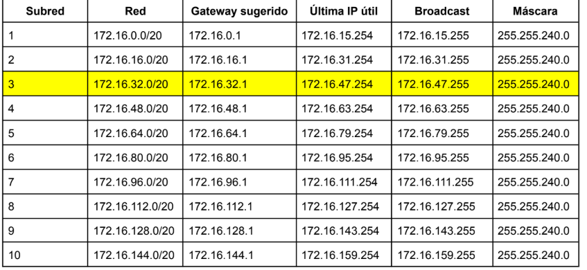
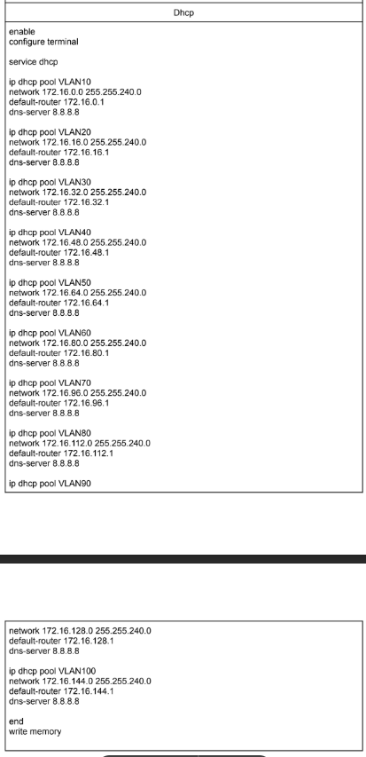

Actividad 2 - Cisco Packet Tracer
Diseño y configuración de una topología de red utilizando Cisco Packet Tracer.
Cálculo de Subredes
Partimos de la red 172.16.0.0/16 y necesitamos crear 10 subredes diferentes.
Para ello se toman prestados 4 bits obteniendo una nueva máscara /20.
Máscara decimal: 255.255.240.0
Salto entre redes: 16

Figura 1. Tabla de subredes calculadas.
Diseño de la Topología
Se realizó el diseño completo de la red en Cisco Packet Tracer utilizando:
- 1 Router
- 3 Switches
- 1 PC por VLAN
- 1 Servidor
- DHCP configurado en el router
Configuración de VLANs
Se configuraron las VLANs utilizando encapsulación dot1Q.

Figura 2. Configuración de interfaces VLAN.
enable configure terminal interface g0/0/0.10 encapsulation dot1Q 10 ip address 172.16.0.1 255.255.240.0 interface g0/0/0.20 encapsulation dot1Q 20 ip address 172.16.16.1 255.255.240.0
Configuración DHCP
Posteriormente se configuró DHCP para todas las VLANs.

Figura 3. Configuración DHCP.
ip dhcp pool VLAN10 network 172.16.0.0 255.255.240.0 default-router 172.16.0.1 dns-server 8.8.8.8 ip dhcp pool VLAN20 network 172.16.16.0 255.255.240.0 default-router 172.16.16.1 dns-server 8.8.8.8